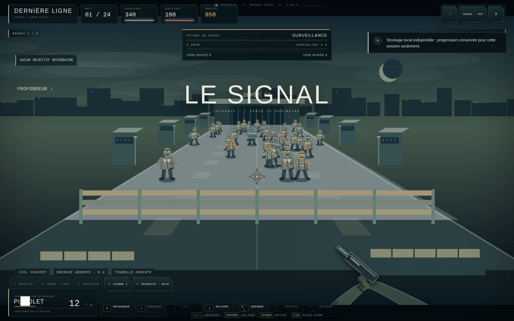
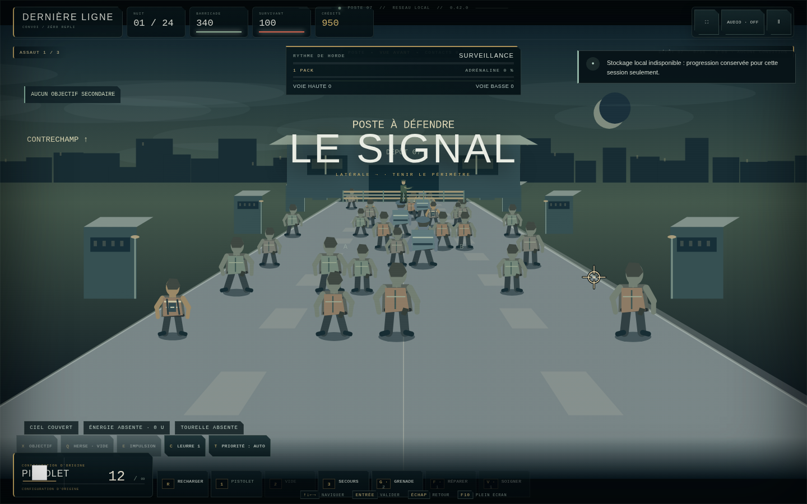
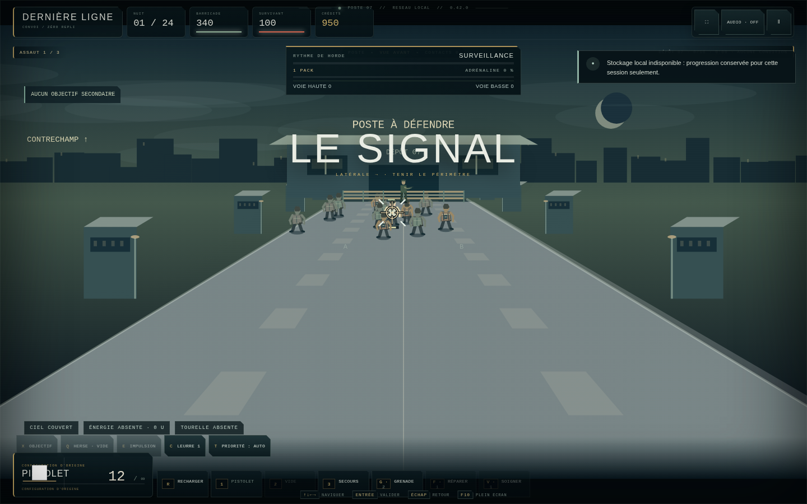

QA automatisée : 124/124 assertions + 180/180 cas balistiques.
Ces captures ciblent la géométrie du moteur. Le raster lourd est allégé pendant l’automatisation pour accélérer Chromium ; la build livrée conserve ses ressources complètes.

Le rig FPS reste réservé à la vue avant. Les zombies utilisent la largeur du corridor et ne se lisent plus comme deux files rigides.

Aucune arme FPS au bas de l’écran ; un unique survivant distant tient le poste.

Réticule, silhouette projetée et impact utilisent le même repère visible.